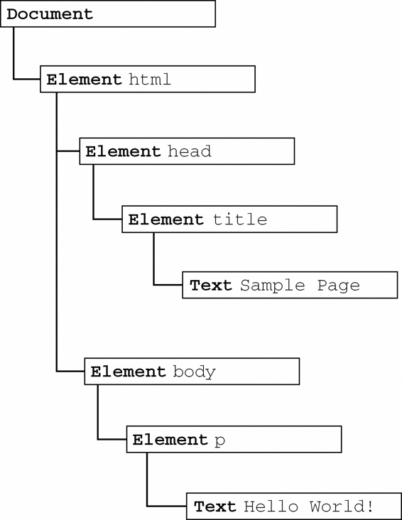
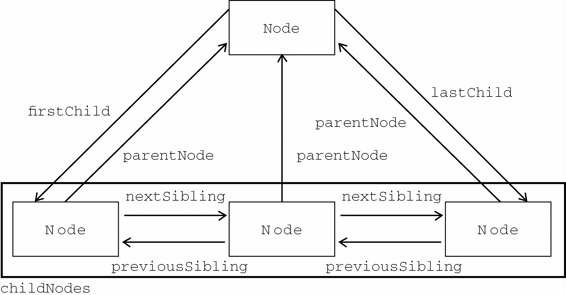

虽然所有节点类型都继承自
虽然所有节点类型都继承自Node，但并不是每种节点都有子节点。本章后面将会讨论不同节点类型之间的差异。
DOM可以将任何HTML或XML文档描绘成一个由多层节点构成的结构。节点分为几种不同的类型，每种类型分别表示文档中不同的信息及（或）标记。每个节点都拥有各自的特点、数据和方法，另外也与其他节点存在某种关系。节点之间的关系构成了层次，而所有页面标记则表现为一个以特定节点为根节点的树形结构。以下面的HTML为例：
<html>
<head>
<title>Sample Page</title>
</head>
<body>
<p>Hello World!</p>
</body>
</html>
可以将这个简单的HTML文档表示为一个层次结构，如图10-1所示。
文档节点是每个文档的根节点。在这个例子中，文档节点只有一个子节点，即<html>元素，我们称之为文档元素。文档元素是文档的最外层元素，文档中的其他所有元素都包含在文档元素中。每个文档只能有一个文档元素。在HTML页面中，文档元素始终都是<html>元素。在XML中，没有预定义的元素，因此任何元素都可能成为文档元素。
每一段标记都可以通过树中的一个节点来表示：HTML元素通过元素节点表示，特性（attribute）通过特性节点表示，文档类型通过文档类型节点表示，而注释则通过注释节点表示。总共有12种节点类型，这些类型都继承自一个基类型。

图 10-1
DOM1级定义了一个Node接口，该接口将由DOM中的所有节点类型实现。这个Node接口在JavaScript中是作为Node类型实现的；除了IE之外，在其他所有浏览器中都可以访问到这个类型。JavaScript中的所有节点类型都继承自Node类型，因此所有节点类型都共享着相同的基本属性和方法。
每个节点都有一个nodeType属性，用于表明节点的类型。节点类型由在Node类型中定义的下列12个数值常量来表示，任何节点类型必居其一：
Node.ELEMENT_NODE(1)；
Node.ATTRIBUTE_NODE(2)；
Node.TEXT_NODE(3)；
Node.CDATA_SECTION_NODE(4)；
Node.ENTITY_REFERENCE_NODE(5)；
Node.ENTITY_NODE(6)；
Node.PROCESSING_INSTRUCTION_NODE(7)；
Node.COMMENT_NODE(8)；
Node.DOCUMENT_NODE(9)；
Node.DOCUMENT_TYPE_NODE(10)；
Node.DOCUMENT_FRAGMENT_NODE(11)；
Node.NOTATION_NODE(12)。
通过比较上面这些常量，可以很容易地确定节点的类型，例如：
if (someNode.nodeType == Node.ELEMENT_NODE){ //在IE中无效
alert("Node is an element.");
}
这个例子比较了someNode.nodeType与Node.ELEMENT_NODE常量。如果二者相等，则意味着someNode确实是一个元素。然而，由于IE没有公开Node类型的构造函数，因此上面的代码在IE中会导致错误。为了确保跨浏览器兼容，最好还是将nodeType属性与数字值进行比较，如下所示：
if (someNode.nodeType == 1){ //适用于所有浏览器
alert("Node is an element.");
}
并不是所有节点类型都受到Web浏览器的支持。开发人员最常用的就是元素和文本节点。本章后面将详细讨论每个节点类型的受支持情况及使用方法。
1. nodeName和nodeValue属性
要了解节点的具体信息，可以使用nodeName和nodeValue这两个属性。这两个属性的值完全取决于节点的类型。在使用这两个值以前，最好是像下面这样先检测一下节点的类型。
if (someNode.nodeType == 1){
value = someNode.nodeName; //nodeName的值是元素的标签名
}
在这个例子中，首先检查节点类型，看它是不是一个元素。如果是，则取得并保存nodeName的值。对于元素节点，nodeName中保存的始终都是元素的标签名，而nodeValue的值则始终为null。
2. 节点关系
文档中所有的节点之间都存在这样或那样的关系。节点间的各种关系可以用传统的家族关系来描述，相当于把文档树比喻成家谱。在HTML中，可以将<body>元素看成是<html>元素的子元素；相应地，也就可以将<html>元素看成是<body>元素的父元素。而<head>元素，则可以看成是<body>元素的同胞元素，因为它们都是同一个父元素<html>的直接子元素。
每个节点都有一个childNodes属性，其中保存着一个NodeList对象。NodeList是一种类数组对象，用于保存一组有序的节点，可以通过位置来访问这些节点。请注意，虽然可以通过方括号语法来访问NodeList的值，而且这个对象也有length属性，但它并不是Array的实例。NodeList对象的独特之处在于，它实际上是基于DOM结构动态执行查询的结果，因此DOM结构的变化能够自动反映在NodeList对象中。我们常说，NodeList是有生命、有呼吸的对象，而不是在我们第一次访问它们的某个瞬间拍摄下来的一张快照。
下面的例子展示了如何访问保存在NodeList中的节点——可以通过方括号，也可以使用item()方法。
var firstChild = someNode.childNodes[0];
var secondChild = someNode.childNodes.item(1);
var count = someNode.childNodes.length;
无论使用方括号还是使用item()方法都没有问题，但使用方括号语法看起来与访问数组相似，因此颇受一些开发人员的青睐。另外，要注意length属性表示的是访问NodeList的那一刻，其中包含的节点数量。我们在本书前面介绍过，对arguments对象使用Array.prototype.slice()方法可以将其转换为数组。而采用同样的方法，也可以将NodeList对象转换为数组。来看下面的例子：
//在IE8及之前版本中无效
var arrayOfNodes = Array.prototype.slice.call(someNode.childNodes,0);
除IE8及更早版本之外，这行代码能在任何浏览器中运行。由于IE8及更早版本将NodeList实现为一个COM对象，而我们不能像使用JScript对象那样使用这种对象，因此上面的代码会导致错误。要想在IE中将NodeList转换为数组，必须手动枚举所有成员。下列代码在所有浏览器中都可以运行：
function convertToArray(nodes){
var array = null;
try {
array = Array.prototype.slice.call(nodes, 0); //针对非IE浏览器
} catch (ex) {
array = new Array();
for (var i=0, len=nodes.length; i < len; i++){
array.push(nodes[i]);
}
}
return array;
}
这个convertToArray()函数首先尝试了创建数组的最简单方式。如果导致了错误（说明是在IE8及更早版本中），则通过try-catch块来捕获错误，然后手动创建数组。这是另一种检测怪癖的形式。
每个节点都有一个parentNode属性，该属性指向文档树中的父节点。包含在childNodes列表中的所有节点都具有相同的父节点，因此它们的parentNode属性都指向同一个节点。此外，包含在childNodes列表中的每个节点相互之间都是同胞节点。通过使用列表中每个节点的previousSibling和nextSibling属性，可以访问同一列表中的其他节点。列表中第一个节点的previousSibling属性值为null，而列表中最后一个节点的nextSibling属性的值同样也为null，如下面的例子所示：
if (someNode.nextSibling === null){
alert("Last node in the parent’s childNodes list.");
} else if (someNode.previousSibling === null){
alert("First node in the parent’s childNodes list.");
}
当然，如果列表中只有一个节点，那么该节点的nextSibling和previousSibling都为null。
父节点与其第一个和最后一个子节点之间也存在特殊关系。父节点的firstChild和lastChild属性分别指向其childNodes列表中的第一个和最后一个节点。其中，someNode.firstChild的值始终等于someNode.childNodes[0]，而someNode.lastChild的值始终等于someNode.childNodes [someNode.childNodes.length-1]。在只有一个子节点的情况下，firstChild和lastChild指向同一个节点。如果没有子节点，那么firstChild和lastChild的值均为null。明确这些关系能够对我们查找和访问文档结构中的节点提供极大的便利。图10-2形象地展示了上述关系。

图 10-2
在反映这些关系的所有属性当中，childNodes属性与其他属性相比更方便一些，因为只须使用简单的关系指针，就可以通过它访问文档树中的任何节点。另外，hasChildNodes()也是一个非常有用的方法，这个方法在节点包含一或多个子节点的情况下返回true；应该说，这是比查询childNodes列表的length属性更简单的方法。
所有节点都有的最后一个属性是ownerDocument，该属性指向表示整个文档的文档节点。这种关系表示的是任何节点都属于它所在的文档，任何节点都不能同时存在于两个或更多个文档中。通过这个属性，我们可以不必在节点层次中通过层层回溯到达顶端，而是可以直接访问文档节点。
Node，但并不是每种节点都有子节点。本章后面将会讨论不同节点类型之间的差异。
3. 操作节点
因为关系指针都是只读的，所以DOM提供了一些操作节点的方法。其中，最常用的方法是appendChild()，用于向childNodes列表的末尾添加一个节点。添加节点后，childNodes的新增节点、父节点及以前的最后一个子节点的关系指针都会相应地得到更新。更新完成后，appendChild()返回新增的节点。来看下面的例子：
var returnedNode = someNode.appendChild(newNode);
alert(returnedNode == newNode); //true
alert(someNode.lastChild == newNode); //true
如果传入到appendChild()中的节点已经是文档的一部分了，那结果就是将该节点从原来的位置转移到新位置。即使可以将DOM树看成是由一系列指针连接起来的，但任何DOM节点也不能同时出现在文档中的多个位置上。因此，如果在调用appendChild()时传入了父节点的第一个子节点，那么该节点就会成为父节点的最后一个子节点，如下面的例子所示。
//someNode有多个子节点
var returnedNode = someNode.appendChild(someNode.firstChild);
alert(returnedNode == someNode.firstChild); //false
alert(returnedNode == someNode.lastChild); //true
如果需要把节点放在childNodes列表中某个特定的位置上，而不是放在末尾，那么可以使用insertBefore()方法。这个方法接受两个参数：要插入的节点和作为参照的节点。插入节点后，被插入的节点会变成参照节点的前一个同胞节点（previousSibling），同时被方法返回。如果参照节点是null，则insertBefore()与appendChild()执行相同的操作，如下面的例子所示。
//插入后成为最后一个子节点
returnedNode = someNode.insertBefore(newNode, null);
alert(newNode == someNode.lastChild); //true
//插入后成为第一个子节点
var returnedNode = someNode.insertBefore(newNode, someNode.firstChild);
alert(returnedNode == newNode); //true
alert(newNode == someNode.firstChild); //true
//插入到最后一个子节点前面
returnedNode = someNode.insertBefore(newNode, someNode.lastChild);
alert(newNode == someNode.childNodes[someNode.childNodes.length-2]); //true
前面介绍的appendChild()和insertBefore()方法都只插入节点，不会移除节点。而下面要介绍的replaceChild()方法接受的两个参数是：要插入的节点和要替换的节点。要替换的节点将由这个方法返回并从文档树中被移除，同时由要插入的节点占据其位置。来看下面的例子。
//替换第一个子节点
var returnedNode = someNode.replaceChild(newNode, someNode.firstChild);
//替换最后一个子节点
returnedNode = someNode.replaceChild(newNode, someNode.lastChild);
在使用replaceChild()插入一个节点时，该节点的所有关系指针都会从被它替换的节点复制过来。尽管从技术上讲，被替换的节点仍然还在文档中，但它在文档中已经没有了自己的位置。
如果只想移除而非替换节点，可以使用removeChild()方法。这个方法接受一个参数，即要移除的节点。被移除的节点将成为方法的返回值，如下面的例子所示。
//移除第一个子节点
var formerFirstChild = someNode.removeChild(someNode.firstChild);
//移除最后一个子节点
var formerLastChild = someNode.removeChild(someNode.lastChild);
与使用replaceChild()方法一样，通过removeChild()移除的节点仍然为文档所有，只不过在文档中已经没有了自己的位置。
前面介绍的四个方法操作的都是某个节点的子节点，也就是说，要使用这几个方法必须先取得父节点（使用parentNode属性）。另外，并不是所有类型的节点都有子节点，如果在不支持子节点的节点上调用了这些方法，将会导致错误发生。
4. 其他方法
有两个方法是所有类型的节点都有的。第一个就是cloneNode()，用于创建调用这个方法的节点的一个完全相同的副本。cloneNode()方法接受一个布尔值参数，表示是否执行深复制。在参数为true的情况下，执行深复制，也就是复制节点及其整个子节点树；在参数为false的情况下，执行浅复制，即只复制节点本身。复制后返回的节点副本属于文档所有，但并没有为它指定父节点。因此，这个节点副本就成为了一个“孤儿”，除非通过appendChild()、insertBefore()或replaceChild()将它添加到文档中。例如，假设有下面的HTML代码。
<ul>
<li>item 1</li>
<li>item 2</li>
<li>item 3</li>
</ul>
如果我们已经将<ul>元素的引用保存在了变量myList中，那么通常下列代码就可以看出使用cloneNode()方法的两种模式。
var deepList = myList.cloneNode(true);
alert(deepList.childNodes.length); //3（IE < 9）或7（其他浏览器）
var shallowList = myList.cloneNode(false);
alert(shallowList.childNodes.length); //0
在这个例子中，deepList中保存着一个对myList执行深复制得到的副本。因此，deepList中包含3个列表项，每个列表项中都包含文本。而变量shallowList中保存着对myList执行浅复制得到的副本，因此它不包含子节点。deepList.childNodes.length中的差异主要是因为IE8及更早版本与其他浏览器处理空白字符的方式不一样。IE9之前的版本不会为空白符创建节点。
cloneNode()方法不会复制添加到DOM节点中的JavaScript属性，例如事件处理程序等。这个方法只复制特性、（在明确指定的情况下也复制）子节点，其他一切都不会复制。IE在此存在一个bug，即它会复制事件处理程序，所以我们建议在复制之前最好先移除事件处理程序。
我们要介绍的最后一个方法是normalize()，这个方法唯一的作用就是处理文档树中的文本节点。由于解析器的实现或DOM操作等原因，可能会出现文本节点不包含文本，或者接连出现两个文本节点的情况。当在某个节点上调用这个方法时，就会在该节点的后代节点中查找上述两种情况。如果找到了空文本节点，则删除它；如果找到相邻的文本节点，则将它们合并为一个文本节点。本章后面还将进一步讨论这个方法。
JavaScript通过Document类型表示文档。在浏览器中，document对象是HTMLDocument（继承自Document类型）的一个实例，表示整个HTML页面。而且，document对象是window对象的一个属性，因此可以将其作为全局对象来访问。Document节点具有下列特征：
nodeType的值为9；
nodeName的值为"#document"；
nodeValue的值为null；
parentNode的值为null；
ownerDocument的值为null；
其子节点可能是一个DocumentType（最多一个）、Element（最多一个）、ProcessingInstruction或Comment。
Document类型可以表示HTML页面或者其他基于XML的文档。不过，最常见的应用还是作为HTMLDocument实例的document对象。通过这个文档对象，不仅可以取得与页面有关的信息，而且还能操作页面的外观及其底层结构。
Document类型的构造函数和原型。但在所有浏览器中都可以访问HTMLDocument类型的构造函数和原型，包括IE8及后续版本。
1. 文档的子节点
虽然DOM标准规定Document节点的子节点可以是DocumentType、Element、ProcessingInstruction或Comment，但还有两个内置的访问其子节点的快捷方式。第一个就是documentElement属性，该属性始终指向HTML页面中的<html>元素。另一个就是通过childNodes列表访问文档元素，但通过documentElement属性则能更快捷、更直接地访问该元素。以下面这个简单的页面为例。
<html>
<body>
</body>
</html>
这个页面在经过浏览器解析后，其文档中只包含一个子节点，即<html>元素。可以通过documentElement或childNodes列表来访问这个元素，如下所示。
var html = document.documentElement; //取得对<html>的引用
alert(html === document.childNodes[0]); //true
alert(html === document.firstChild); //true
这个例子说明，documentElement、firstChild和childNodes[0]的值相同，都指向<html>元素。
作为HTMLDocument的实例，document对象还有一个body属性，直接指向<body>元素。因为开发人员经常要使用这个元素，所以document.body在JavaScript代码中出现的频率非常高，其用法如下。
var body = document.body; //取得对<body>的引用
所有浏览器都支持document.documentElement和document.body属性。
Document另一个可能的子节点是DocumentType。通常将<!DOCTYPE>标签看成一个与文档其他部分不同的实体，可以通过doctype属性（在浏览器中是document.doctype）来访问它的信息。
var doctype = document.doctype; //取得对<!DOCTYPE>的引用
浏览器对document.doctype的支持差别很大，可以给出如下总结。
IE8及之前版本：如果存在文档类型声明，会将其错误地解释为一个注释并把它当作Comment节点；而document.doctype的值始终为null。
IE9+及Firefox：如果存在文档类型声明，则将其作为文档的第一个子节点；document.doctype是一个DocumentType节点，也可以通过document.firstChild或document.childNodes[0]访问同一个节点。
Safari、Chrome和Opera：如果存在文档类型声明，则将其解析，但不作为文档的子节点。document.doctype是一个DocumentType节点，但该节点不会出现在document.childNodes中。
由于浏览器对document.doctype的支持不一致，因此这个属性的用处很有限。
从技术上说，出现在<html>元素外部的注释应该算是文档的子节点。然而，不同的浏览器在是否解析这些注释以及能否正确处理它们等方面，也存在很大差异。以下面简单的HTML页面为例。
<!--第一条注释 -->
<html>
<body>
</body>
</html>
<!--第二条注释 -->
看起来这个页面应该有3个子节点：注释、<html>元素、注释。从逻辑上讲，我们会认为document.childNodes中应该包含与这3个节点对应的3项。但是，现实中的浏览器在处理位于<html>外部的注释方面存在如下差异。
IE8及之前版本、Safari 3.1及更高版本、Opera和Chrome只为第一条注释创建节点，不为第二条注释创建节点。结果，第一条注释就会成为document.childNodes中的第一个子节点。
IE9及更高版本会将第一条注释创建为document.childNodes中的一个注释节点，也会将第二条注释创建为document.childNodes中的注释子节点。
Firefox以及Safari 3.1之前的版本会完全忽略这两条注释。
同样，浏览器间的这种不一致性也导致了位于<html>元素外部的注释没有什么用处。
多数情况下，我们都用不着在document对象上调用appendChild()、removeChild()和replaceChild()方法，因为文档类型（如果存在的话）是只读的，而且它只能有一个元素子节点（该节点通常早就已经存在了）。
2. 文档信息
作为HTMLDocument的一个实例，document对象还有一些标准的Document对象所没有的属性。这些属性提供了document对象所表现的网页的一些信息。其中第一个属性就是title，包含着<title>元素中的文本——显示在浏览器窗口的标题栏或标签页上。通过这个属性可以取得当前页面的标题，也可以修改当前页面的标题并反映在浏览器的标题栏中。修改title属性的值不会改变<title>元素。来看下面的例子。
//取得文档标题
var originalTitle = document.title;
//设置文档标题
document.title = "New page title";
接下来要介绍的3个属性都与对网页的请求有关，它们是URL、domain和referrer。URL属性中包含页面完整的URL（即地址栏中显示的URL），domain属性中只包含页面的域名，而referrer属性中则保存着链接到当前页面的那个页面的URL。在没有来源页面的情况下，referrer属性中可能会包含空字符串。所有这些信息都存在于请求的HTTP头部，只不过是通过这些属性让我们能够在JavaScrip中访问它们而已，如下面的例子所示。
//取得完整的URL
var url = document.URL;
//取得域名
var domain = document.domain;
//取得来源页面的URL
var referrer = document.referrer;
URL与domain属性是相互关联的。例如，如果document.URL等于http://www.wrox.com/WileyCDA/， 那么document.domain就等于www.wrox.com。
在这3个属性中，只有domain是可以设置的。但由于安全方面的限制，也并非可以给domain设置任何值。如果URL中包含一个子域名，例如p2p.wrox.com，那么就只能将domain设置为"wrox.com"（URL中包含"www"，如www.wrox.com时，也是如此）。不能将这个属性设置为URL中不包含的域，如下面的例子所示。
//假设页面来自p2p.wrox.com域
document.domain = "wrox.com"; // 成功
document.domain = "nczonline.net"; // 出错！
当页面中包含来自其他子域的框架或内嵌框架时，能够设置document.domain就非常方便了。由于跨域安全限制，来自不同子域的页面无法通过JavaScript通信。而通过将每个页面的document.domain设置为相同的值，这些页面就可以互相访问对方包含的JavaScript对象了。例如，假设有一个页面加载自www.wrox.com，其中包含一个内嵌框架，框架内的页面加载自p2p.wrox.com。由于document.domain字符串不一样，内外两个页面之间无法相互访问对方的JavaScript对象。但如果将这两个页面的document.domain值都设置为"wrox.com"，它们之间就可以通信了。
浏览器对domain属性还有一个限制，即如果域名一开始是“松散的”（loose），那么不能将它再设置为“紧绷的”（tight）。换句话说，在将document.domain设置为"wrox.com"之后，就不能再将其设置回"p2p.wrox.com"，否则将会导致错误，如下面的例子所示。
//假设页面来自于p2p.wrox.com域
document.domain = "wrox.com"; //松散的（成功）
document.domain = "p2p.wrox.com"; //紧绷的（出错！）
所有浏览器中都存在这个限制，但IE8是实现这一限制的最早的IE版本。
3. 查找元素
说到最常见的DOM应用，恐怕就要数取得特定的某个或某组元素的引用，然后再执行一些操作了。取得元素的操作可以使用document对象的几个方法来完成。其中，Document类型为此提供了两个方法：getElementById()和getElementsByTagName()。
第一个方法，getElementById()，接收一个参数：要取得的元素的ID。如果找到相应的元素则返回该元素，如果不存在带有相应ID的元素，则返回null。注意，这里的ID必须与页面中元素的id特性（attribute）严格匹配，包括大小写。以下面的元素为例。
<div id="myDiv">Some text</div>
可以使用下面的代码取得这个元素：
var div = document.getElementById("myDiv"); //取得<div>元素的引用
但是，下面的代码在除IE7及更早版本之外的所有浏览器中都将返回null。
var div = document.getElementById("mydiv"); //无效的ID（在IE7及更早版本中可以）
IE8及较低版本不区分ID的大小写，因此"myDiv"和"mydiv"会被当作相同的元素ID。
如果页面中多个元素的ID值相同，getElementById()只返回文档中第一次出现的元素。IE7及较低版本还为此方法添加了一个有意思的“怪癖”：name特性与给定ID匹配的表单元素（<input>、<textarea>、<button>及<select>）也会被该方法返回。如果有哪个表单元素的name特性等于指定的ID，而且该元素在文档中位于带有给定ID的元素前面，那么IE就会返回那个表单元素。来看下面的例子。
<input type="text" name="myElement" value="Text field">
<div id="myElement">A div</div>
基于这段HTML代码，在IE7中调用document.getElementById("myElement ")，结果会返回<input>元素；而在其他所有浏览器中，都会返回对<div>元素的引用。为了避免IE中存在的这个问题，最好的办法是不让表单字段的name特性与其他元素的ID相同。
另一个常用于取得元素引用的方法是getElementsByTagName()。这个方法接受一个参数，即要取得元素的标签名，而返回的是包含零或多个元素的NodeList。在HTML文档中，这个方法会返回一个HTMLCollection对象，作为一个“动态”集合，该对象与NodeList非常类似。例如，下列代码会取得页面中所有的<img>元素，并返回一个HTMLCollection。
var images = document.getElementsByTagName("img");
这行代码会将一个HTMLCollection对象保存在images变量中。与NodeList对象类似，可以使用方括号语法或item()方法来访问HTMLCollection对象中的项。而这个对象中元素的数量则可以通过其length属性取得，如下面的例子所示。
alert(images.length); //输出图像的数量
alert(images[0].src); //输出第一个图像元素的src特性
alert(images.item(0).src); //输出第一个图像元素的src特性
HTMLCollection对象还有一个方法，叫做namedItem()，使用这个方法可以通过元素的name特性取得集合中的项。例如，假设上面提到的页面中包含如下<img>元素：
<img src="myimage.gif" name="myImage">
那么就可以通过如下方式从images变量中取得这个<img>元素：
var myImage = images.namedItem("myImage");
在提供按索引访问项的基础上，HTMLCollection还支持按名称访问项，这就为我们取得实际想要的元素提供了便利。而且，对命名的项也可以使用方括号语法来访问，如下所示：
var myImage = images["myImage"];
对HTMLCollection而言，我们可以向方括号中传入数值或字符串形式的索引值。在后台，对数值索引就会调用item()，而对字符串索引就会调用namedItem()。
要想取得文档中的所有元素，可以向getElementsByTagName()中传入"*"。在JavaScript及CSS中，星号（*）通常表示“全部”。下面看一个例子。
var allElements = document.getElementsByTagName("*");
仅此一行代码返回的HTMLCollection中，就包含了整个页面中的所有元素——按照它们出现的先后顺序。换句话说，第一项是<html>元素，第二项是<head>元素，以此类推。由于IE将注释（Comment）实现为元素（Element），因此在IE中调用getElementsByTagName("*")将会返回所有注释节点。
getElementsByTagName()的标签名是不需要区分大小写的。但对于XML页面而言（包括XHTML），getElementsByTagName()方法就会区分大小写。
第三个方法，也是只有HTMLDocument类型才有的方法，是getElementsByName()。顾名思义，这个方法会返回带有给定name特性的所有元素。最常使用getElementsByName()方法的情况是取得单选按钮；为了确保发送给浏览器的值正确无误，所有单选按钮必须具有相同的name特性，如下面的例子所示。
<fieldset>
<legend>Which color do you prefer?</legend>
<ul>
<li><input type="radio" value="red" name="color" id="colorRed">
<label for="colorRed">Red</label></li>
<li><input type="radio" value="green" name="color" id="colorGreen">
<label for="colorGreen">Green</label></li>
<li><input type="radio" value="blue" name="color" id="colorBlue">
<label for="colorBlue">Blue</label></li>
</ul>
</fieldset>
如这个例子所示，其中所有单选按钮的name特性值都是"color"，但它们的ID可以不同。ID的作用在于将<label>元素应用到每个单选按钮，而name特性则用以确保三个值中只有一个被发送给浏览器。这样，我们就可以使用如下代码取得所有单选按钮：
var radios = document.getElementsByName("color");
与getElementsByTagName()类似，getElementsByName()方法也会返回一个HTMLCollectioin。但是，对于这里的单选按钮来说，namedItem()方法则只会取得第一项（因为每一项的name特性都相同）。
4. 特殊集合
除了属性和方法，document对象还有一些特殊的集合。这些集合都是HTMLCollection对象，为访问文档常用的部分提供了快捷方式，包括：
document.anchors，包含文档中所有带name特性的<a>元素；
document.applets，包含文档中所有的<applet>元素，因为不再推荐使用<applet>元素，所以这个集合已经不建议使用了；
document.forms，包含文档中所有的<form>元素，与document.getElementsByTagName("form")得到的结果相同；
document.images，包含文档中所有的<img>元素，与document.getElementsByTagName("img")得到的结果相同；
document.links，包含文档中所有带href特性的<a>元素。
这个特殊集合始终都可以通过HTMLDocument对象访问到，而且，与HTMLCollection对象类似，集合中的项也会随着当前文档内容的更新而更新。
5. DOM一致性检测
由于DOM分为多个级别，也包含多个部分，因此检测浏览器实现了DOM的哪些部分就十分必要了。document.implementation属性就是为此提供相应信息和功能的对象，与浏览器对DOM的实现直接对应。DOM1级只为document.implementation规定了一个方法，即hasFeature()。这个方法接受两个参数：要检测的DOM功能的名称及版本号。如果浏览器支持给定名称和版本的功能，则该方法返回true，如下面的例子所示：
var hasXmlDom = document.implementation.hasFeature("XML", "1.0");
下表列出了可以检测的不同的值及版本号。
| 功 能 | 版 本 号 | |
|---|---|---|
| Core | 1.0、2.0、3.0 | 基本的DOM，用于描述表现文档的节点树 |
| XML | 1.0、2.0、3.0 | Core的XML扩展，添加了对CDATA、处理指令及实体的支持 |
| HTML | 1.0、2.0 | XML的HTML扩展，添加了对HTML特有元素及实体的支持 |
| Views | 2.0 | 基于某些样式完成文档的格式化 |
| StyleSheets | 2.0 | 将样式表关联到文档 |
| CSS | 2.0 | 对层叠样式表1级的支持 |
| CSS2 | 2.0 | 对层叠样式表2级的支持 |
| Events | 2.0，3.0 | 常规的DOM事件 |
| UIEvents | 2.0，3.0 | 用户界面事件 |
| MouseEvents | 2.0，3.0 | 由鼠标引发的事件（click、mouseover等） |
| MutationEvents | 2.0，3.0 | DOM树变化时引发的事件 |
| HTMLEvents | 2.0 | HTML4.01事件 |
| Range | 2.0 | 用于操作DOM树中某个范围的对象和方法 |
| Traversal | 2.0 | 遍历DOM树的方法 |
| LS | 3.0 | 文件与DOM树之间的同步加载和保存 |
| LS-Async | 3.0 | 文件与DOM树之间的异步加载和保存 |
| Validation | 3.0 | 在确保有效的前提下修改DOM树的方法 |
尽管使用hasFeature()确实方便，但也有缺点。因为实现者可以自行决定是否与DOM规范的不同部分保持一致。事实上，要想让hasFearture()方法针对所有值都返回true很容易，但返回true有时候也不意味着实现与规范一致。例如，Safari 2.x及更早版本会在没有完全实现某些DOM功能的情况下也返回true。为此，我们建议多数情况下，在使用DOM的某些特殊的功能之前，最好除了检测hasFeature()之外，还同时使用能力检测。
6. 文档写入
有一个document对象的功能已经存在很多年了，那就是将输出流写入到网页中的能力。这个能力体现在下列4个方法中：write()、writeln()、open()和close()。其中，write()和writeln()方法都接受一个字符串参数，即要写入到输出流中的文本。write()会原样写入，而writeln()则会在字符串的末尾添加一个换行符（\n）。在页面被加载的过程中，可以使用这两个方法向页面中动态地加入内容，如下面的例子所示。

<html>
<head>
<title>document.write() Example</title>
</head>
<body>
<p>The current date and time is:
<script type="text/javascript">
document.write("<strong>" + (new Date()).toString() + "</strong>");
</script>
</p>
</body>
</html>
DocumentWriteExample01.htm
这个例子展示了在页面加载过程中输出当前日期和时间的代码。其中，日期被包含在一个<strong>元素中，就像在HTML页面中包含普通的文本一样。这样做会创建一个DOM元素，而且可以在将来访问该元素。通过write()和writeln()输出的任何HTML代码都将如此处理。
此外，还可以使用write()和writeln()方法动态地包含外部资源，例如JavaScript文件等。在包含JavaScript文件时，必须注意不能像下面的例子那样直接包含字符串"</script>"，因为这会导致该字符串被解释为脚本块的结束，它后面的代码将无法执行。
<html>
<head>
<title>document.write() Example 2</title>
</head>
<body>
<script type="text/javascript">
document.write("<script type=\"text/javascript\" src=\"file.js\">" +
"</script>");
</script>
</body>
</html>
DocumentWriteExample02.htm
即使这个文件看起来没错，但字符串"</script>"将被解释为与外部的<script>标签匹配，结果文本")；将会出现在页面中。为避免这个问题，只需把这个字符串分开写即可；第2章也曾经提及这个问题，解决方案如下。
<html>
<head>
<title>document.write() Example 3</title>
</head>
<body>
<script type="text/javascript">
document.write("<script type=\"text/javascript\" src=\"file.js\">" +
"<\/script>");
</script>
</body>
</html>
DocumentWriteExample03.htm
字符串"<\/script>"不会被当作外部<script>标签的关闭标签，因而页面中也就不会出现多余的内容了。
前面的例子使用document.write()在页面被呈现的过程中直接向其中输出了内容。如果在文档加载结束后再调用document.write()，那么输出的内容将会重写整个页面，如下面的例子所示：
<html>
<head>
<title>document.write() Example 4</title>
</head>
<body>
<p>This is some content that you won't get to see because it will be overwritten.</p>
<script type="text/javascript">
window.onload = function(){
document.write("Hello world!");
};
</script>
</body>
</html>
DocumentWriteExample04.htm
在这个例子中，我们使用了window.onload事件处理程序（事件将在第13章讨论），等到页面完全加载之后延迟执行函数。函数执行之后，字符串"Hello world!"会重写整个页面内容。
方法open()和close()分别用于打开和关闭网页的输出流。如果是在页面加载期间使用write()或writeln()方法，则不需要用到这两个方法。
application/xml+xhtml内容类型提供的页面，这两个方法也同样无效。
除了Document类型之外，Element类型就要算是Web编程中最常用的类型了。Element类型用于表现XML或HTML元素，提供了对元素标签名、子节点及特性的访问。Element节点具有以下特征：
nodeType的值为1；
nodeName的值为元素的标签名；
nodeValue的值为null；
parentNode可能是Document或Element；
其子节点可能是Element、Text、Comment、ProcessingInstruction、CDATASection或EntityReference。
要访问元素的标签名，可以使用nodeName属性，也可以使用tagName属性；这两个属性会返回相同的值（使用后者主要是为了清晰起见）。以下面的元素为例：
<div id="myDiv"></div>
可以像下面这样取得这个元素及其标签名：
var div = document.getElementById("myDiv");
alert(div.tagName); //"DIV"
alert(div.tagName == div.nodeName); //true
这里的元素标签名是div，它拥有一个值为"myDiv"的ID。可是，div.tagName实际上输出的是"DIV"而非"div"。在HTML中，标签名始终都以全部大写表示；而在XML（有时候也包括XHTML）中，标签名则始终会与源代码中的保持一致。假如你不确定自己的脚本将会在HTML还是XML文档中执行，最好是在比较之前将标签名转换为相同的大小写形式，如下面的例子所示：
if (element.tagName == "div"){ //不能这样比较，很容易出错！
//在此执行某些操作
}
if (element.tagName.toLowerCase() == "div"){ //这样最好（适用于任何文档）
//在此执行某些操作
}
这个例子展示了围绕tagName属性的两次比较操作。第一次比较非常容易出错，因为其代码在HTML文档中不管用。第二次比较将标签名转换成了全部小写，是我们推荐的做法，因为这种做法适用于HTML文档，也适用于XML文档。
Element类型的构造函数及原型，包括IE8及之前版本。在Safari 2之前版本和Opera 8之前的版本中，不能访问Element类型的构造函数。
1. HTML元素
所有HTML元素都由HTMLElement类型表示，不是直接通过这个类型，也是通过它的子类型来表示。HTMLElement类型直接继承自Element并添加了一些属性。添加的这些属性分别对应于每个HTML元素中都存在的下列标准特性。
id，元素在文档中的唯一标识符。
title，有关元素的附加说明信息，一般通过工具提示条显示出来。
lang，元素内容的语言代码，很少使用。
dir，语言的方向，值为"ltr"（left-to-right，从左至右）或"rtl"（right-to-left，从右至左），也很少使用。
className，与元素的class特性对应，即为元素指定的CSS类。没有将这个属性命名为class，是因为class是ECMAScript的保留字（有关保留字的信息，请参见第1章）。
上述这些属性都可以用来取得或修改相应的特性值。以下面的HTML元素为例：
<div id="myDiv" class="bd" title="Body text" lang="en" dir="ltr"></div>
HTMLElementsExample01.htm
元素中指定的所有信息，都可以通过下列JavaScript代码取得：
var div = document.getElementById("myDiv");
alert(div.id); //"myDiv""
alert(div.className); //"bd"
alert(div.title); //"Body text"
alert(div.lang); //"en"
alert(div.dir); //"ltr"
当然，像下面这样通过为每个属性赋予新的值，也可以修改对应的每个特性：
div.id = "someOtherId";
div.className = "ft";
div.title = "Some other text";
div.lang = "fr";
div.dir ="rtl";
HTMLElementsExample01.htm
并不是对所有属性的修改都会在页面中直观地表现出来。对id或lang的修改对用户而言是透明不可见的（假设没有基于它们的值设置的CSS样式），而对title的修改则只会在鼠标移动到这个元素之上时才会显示出来。对dir的修改会在属性被重写的那一刻，立即影响页面中文本的左、右对齐方式。修改className时，如果新类关联了与此前不同的CSS样式，那么就会立即应用新的样式。
前面提到过，所有HTML元素都是由HTMLElement或者其更具体的子类型来表示的。下表列出了所有HTML元素以及与之关联的类型（以斜体印刷的元素表示已经不推荐使用了）。注意，表中的这些类型在Opera、Safari、Chrome和Firefox中都可以通过JavaScript访问，但在IE8之前的版本中不能通过JavaScript访问。
| 元 素 | 类 型 |
|---|---|
| A | HTMLAnchorElement |
| ABBR | HTMLElement |
| ACRONYM | HTMLElement |
| ADDRESS | HTMLElement |
| APPLET | HTMLAppletElement |
| AREA | HTMLAreaElement |
| B | HTMLElement |
| BASE | HTMLBaseElement |
| BASEFONT | HTMLBaseFontElement |
| BDO | HTMLElement |
| BIG | HTMLElement |
| BLOCKQUOTE | HTMLQuoteElement |
| BODY | HTMLBodyElement |
| BR | HTMLBRElement |
| BUTTON | HTMLButtonElement |
| CAPTION | HTMLTableCaptionElement |
| CENTER | HTMLElement |
| CITE | HTMLElement |
| CODE | HTMLElement |
| COL | HTMLTableColElement |
| COLGROUP | HTMLTableColElement |
| DD | HTMLElement |
| DEL | HTMLModElement |
| DFN | HTMLElement |
| DIR | HTMLDirectoryElement |
| DIV | HTMLDivElement |
| DL | HTMLDListElement |
| DT | HTMLElement |
| EM | HTMLElement |
| FIELDSET | HTMLFieldSetElement |
| FONT | HTMLFontElement |
| FORM | HTMLFormElement |
| FRAME | HTMLFrameElement |
| FRAMESET | HTMLFrameSetElement |
| H1 | HTMLHeadingElement |
| H2 | HTMLHeadingElement |
| H3 | HTMLHeadingElement |
| H4 | HTMLHeadingElement |
| H5 | HTMLHeadingElement |
| H6 | HTMLHeadingElement |
| HEAD | HTMLHeadElement |
| HR | HTMLHRElement |
| HTML | HTMLHtmlElement |
| I | HTMLElement |
| IFRAME | HTMLIFrameElement |
| IMG | HTMLImageElement |
| INPUT | HTMLInputElement |
| INS | HTMLModElement |
| ISINDEX | HTMLIsIndexElement |
| KBD | HTMLElement |
| LABEL | HTMLLabelElement |
| LEGEND | HTMLLegendElement |
| LI | HTMLLIElement |
| LINK | HTMLLinkElement |
| MAP | HTMLMapElement |
| MENU | HTMLMenuElement |
| META | HTMLMetaElement |
| NOFRAMES | HTMLElement |
| NOSCRIPT | HTMLElement |
| OBJECT | HTMLObjectElement |
| OL | HTMLOListElement |
| OPTGROUP | HTMLOptGroupElement |
| OPTION | HTMLOptionElement |
| P | HTMLParagraphElement |
| PARAM | HTMLParamElement |
| PRE | HTMLPreElement |
| Q | HTMLQuoteElement |
| S | HTMLElement |
| SAMP | HTMLElement |
| SCRIPT | HTMLScriptElement |
| SELECT | HTMLSelectElement |
| SMALL | HTMLElement |
| SPAN | HTMLElement |
| STRIKE | HTMLElement |
| STRONG | HTMLElement |
| STYLE | HTMLStyleElement |
| SUB | HTMLElement |
| SUP | HTMLElement |
| TABLE | HTMLTableElement |
| TBODY | HTMLTableSectionElement |
| TD | HTMLTableCellElement |
| TEXTAREA | HTMLTextAreaElement |
| TFOOT | HTMLTableSectionElement |
| TH | HTMLTableCellElement |
| THEAD | HTMLTableSectionElement |
| TITLE | HTMLTitleElement |
| TR | HTMLTableRowElement |
| TT | HTMLElement |
| U | HTMLElement |
| UL | HTMLUListElement |
| VAR | HTMLElement |
表中的每一种类型都有与之相关的特性和方法。本书将会讨论其中很多类型。
2. 取得特性
每个元素都有一或多个特性，这些特性的用途是给出相应元素或其内容的附加信息。操作特性的DOM方法主要有三个，分别是getAttribute()、setAttribute()和removeAttribute()。这三个方法可以针对任何特性使用，包括那些以HTMLElement类型属性的形式定义的特性。来看下面的例子：
var div = document.getElementById("myDiv");
alert(div.getAttribute("id")); //"myDiv"
alert(div.getAttribute("class")); //"bd"
alert(div.getAttribute("title")); //"Body text"
alert(div.getAttribute("lang")); //"en"
alert(div.getAttribute("dir")); //"ltr"
注意，传递给getAttribute()的特性名与实际的特性名相同。因此要想得到class特性值，应该传入"class"而不是"className"，后者只有在通过对象属性访问特性时才用。如果给定名称的特性不存在，getAttribute()返回null。
通过getAttribute()方法也可以取得自定义特性（即标准HTML语言中没有的特性）的值，以下面的元素为例：
<div id="myDiv" my_special_attribute="hello!"></div>
这个元素包含一个名为my_special_attribute的自定义特性，它的值是"hello!"。可以像取得其他特性一样取得这个值，如下所示：
var value = div.getAttribute("my_special_attribute");
不过，特性的名称是不区分大小写的，即"ID"和"id"代表的都是同一个特性。另外也要注意，根据HTML5规范，自定义特性应该加上data-前缀以便验证。
任何元素的所有特性，也都可以通过DOM元素本身的属性来访问。当然，HTMLElement也会有5个属性与相应的特性一一对应。不过，只有公认的（非自定义的）特性才会以属性的形式添加到DOM对象中。以下面的元素为例：
<div id="myDiv" align="left" my_special_attribute="hello!"></div>
因为id和align在HTML中是<div>的公认特性，因此该元素的DOM对象中也将存在对应的属性。不过，自定义特性my_special_attribute在Safari、Opera、Chrome及Firefox中是不存在的；但IE却会为自定义特性也创建属性，如下面的例子所示：
alert(div.id); //"myDiv"
alert(div.my_special_attribute); //undefined（IE除外）
alert(div.align); //"left"
ElementAttributesExample02.htm
有两类特殊的特性，它们虽然有对应的属性名，但属性的值与通过getAttribute()返回的值并不相同。第一类特性就是style，用于通过CSS为元素指定样式。在通过getAttribute()访问时，返回的style特性值中包含的是CSS文本，而通过属性来访问它则会返回一个对象。由于style属性是用于以编程方式访问元素样式的（本章后面讨论），因此并没有直接映射到style特性。
第二类与众不同的特性是onclick这样的事件处理程序。当在元素上使用时，onclick特性中包含的是JavaScript代码，如果通过getAttribute()访问，则会返回相应代码的字符串。而在访问onclick属性时，则会返回一个JavaScript函数（如果未在元素中指定相应特性，则返回null）。这是因为onclick及其他事件处理程序属性本身就应该被赋予函数值。
由于存在这些差别，在通过JavaScript以编程方式操作DOM时，开发人员经常不使用getAttribute()，而是只使用对象的属性。只有在取得自定义特性值的情况下，才会使用getAttribute()方法。
getAttribute()方法访问style特性或onclick这样的事件处理特性时，返回的值与属性的值相同。换句话说，getAttribute("style")返回一个对象，而getAttribute("onclick")返回一个函数。虽然IE8已经修复了这个bug，但不同IE版本间的不一致性，也是导致开发人员不使用getAttribute()访问HTML特性的一个原因。
3. 设置特性
与getAttribute()对应的方法是setAttribute()，这个方法接受两个参数：要设置的特性名和值。如果特性已经存在，setAttribute()会以指定的值替换现有的值；如果特性不存在，setAttribute()则创建该属性并设置相应的值。来看下面的例子：
div.setAttribute("id", "someOtherId");
div.setAttribute("class", "ft");
div.setAttribute("title", "Some other text");
div.setAttribute("lang","fr");
div.setAttribute("dir", "rtl");
ElementAttributesExample01.htm
通过setAttribute()方法既可以操作HTML特性也可以操作自定义特性。通过这个方法设置的特性名会被统一转换为小写形式，即"ID"最终会变成"id"。
因为所有特性都是属性，所以直接给属性赋值可以设置特性的值，如下所示。
div.id = "someOtherId";
div.align = "left";
不过，像下面这样为DOM元素添加一个自定义的属性，该属性不会自动成为元素的特性。
div.mycolor = "red";
alert(div.getAttribute("mycolor")); //null（IE除外）
这个例子添加了一个名为mycolor的属性并将它的值设置为"red"。在大多数浏览器中，这个属性都不会自动变成元素的特性，因此想通过getAttribute()取得同名特性的值，结果会返回null。可是，自定义属性在IE中会被当作元素的特性，反之亦然。
setAttribute()存在一些异常行为。通过这个方法设置class和style特性，没有任何效果，而使用这个方法设置事件处理程序特性时也一样。尽管到了IE8才解决这些问题，但我们还是推荐通过属性来设置特性。
要介绍的最后一个方法是removeAttribute()，这个方法用于彻底删除元素的特性。调用这个方法不仅会清除特性的值，而且也会从元素中完全删除特性，如下所示：
div.removeAttribute("class");
这个方法并不常用，但在序列化DOM元素时，可以通过它来确切地指定要包含哪些特性。
removeAttribute()。
4. attributes属性
Element类型是使用attributes属性的唯一一个DOM节点类型。attributes属性中包含一个NamedNodeMap，与NodeList类似，也是一个“动态”的集合。元素的每一个特性都由一个Attr节点表示，每个节点都保存在NamedNodeMap对象中。NamedNodeMap对象拥有下列方法。
getNamedItem_(name)_：返回nodeName属性等于name的节点；
removeNamedItem_(name)_：从列表中移除nodeName属性等于name的节点；
setNamedItem_(node)_：向列表中添加节点，以节点的nodeName属性为索引；
item_(pos)_：返回位于数字pos位置处的节点。
attributes属性中包含一系列节点，每个节点的nodeName就是特性的名称，而节点的nodeValue就是特性的值。要取得元素的id特性，可以使用以下代码。
var id = element.attributes.getNamedItem("id").nodeValue;
以下是使用方括号语法通过特性名称访问节点的简写方式。
var id = element.attributes["id"].nodeValue;
也可以使用这种语法来设置特性的值，即先取得特性节点，然后再将其nodeValue设置为新值，如下所示。
element.attributes["id"].nodeValue = "someOtherId";
调用removeNamedItem()方法与在元素上调用removeAttribute()方法的效果相同——直接删除具有给定名称的特性。下面的例子展示了两个方法间唯一的区别，即removeNamedItem()返回表示被删除特性的Attr节点。
var oldAttr = element.attributes.removeNamedItem("id");
最后，setNamedItem()是一个很不常用的方法，通过这个方法可以为元素添加一个新特性，为此需要为它传入一个特性节点，如下所示。
element.attributes.setNamedItem(newAttr);
一般来说，由于前面介绍的attributes的方法不够方便，因此开发人员更多的会使用getAttribute()、removeAttribute()和setAttribute()方法。
不过，如果想要遍历元素的特性，attributes属性倒是可以派上用场。在需要将DOM结构序列化为XML或HTML字符串时，多数都会涉及遍历元素特性。以下代码展示了如何迭代元素的每一个特性，然后将它们构造成name="value" name="value"这样的字符串格式。
function outputAttributes(element){
var pairs = new Array(),
attrName,
attrValue,
i,
len;
for (i=0, len=element.attributes.length; i < len; i++){
attrName = element.attributes[i].nodeName;
attrValue = element.attributes[i].nodeValue;
pairs.push(attrName + "=\"" + attrValue + "\"");
}
return pairs.join(" ");
}
ElementAttributesExample03.htm
这个函数使用了一个数组来保存名值对，最后再以空格为分隔符将它们拼接起来（这是序列化长字符串时的一种常用技巧）。通过attributes.length属性，for循环会遍历每个特性，将特性的名称和值输出为字符串。关于以上代码的运行结果，以下是两点必要的说明。
针对attributes对象中的特性，不同浏览器返回的顺序不同。这些特性在XML或HTML代码中出现的先后顺序，不一定与它们出现在attributes对象中的顺序一致。
IE7及更早的版本会返回HTML元素中所有可能的特性，包括没有指定的特性。换句话说，返回100多个特性的情况会很常见。
针对IE7及更早版本中存在的问题，可以对上面的函数加以改进，让它只返回指定的特性。每个特性节点都有一个名为specified的属性，这个属性的值如果为true，则意味着要么是在HTML中指定了相应特性，要么是通过setAttribute()方法设置了该特性。在IE中，所有未设置过的特性的该属性值都为false，而在其他浏览器中根本不会为这类特性生成对应的特性节点（因此，在这些浏览器中，任何特性节点的specified值始终为true）。改进后的代码如下所示。
function outputAttributes(element){
var pairs = new Array(),
attrName,
attrValue,
i,
len;
for (i=0, len=element.attributes.length; i < len; i++){
attrName = element.attributes[i].nodeName;
attrValue = element.attributes[i].nodeValue;
if (element.attributes[i].specified) {
pairs.push(attrName + "=\"" + attrValue + "\"");
}
}
return pairs.join(" ");
}
ElementAttributesExample04.htm
这个经过改进的函数可以确保即使在IE7及更早的版本中，也会只返回指定的特性。
5. 创建元素
使用document.createElement()方法可以创建新元素。这个方法只接受一个参数，即要创建元素的标签名。这个标签名在HTML文档中不区分大小写，而在XML（包括XHTML）文档中，则是区分大小写的。例如，使用下面的代码可以创建一个<div>元素。
var div = document.createElement("div");
在使用createElement()方法创建新元素的同时，也为新元素设置了ownerDocuemnt属性。此时，还可以操作元素的特性，为它添加更多子节点，以及执行其他操作。来看下面的例子。
div.id = "myNewDiv";
div.className = "box";
在新元素上设置这些特性只是给它们赋予了相应的信息。由于新元素尚未被添加到文档树中，因此设置这些特性不会影响浏览器的显示。要把新元素添加到文档树，可以使用appendChild()、insertBefore()或replaceChild()方法。下面的代码会把新创建的元素添加到文档的<body>元素中。
document.body.appendChild(div);
CreateElementExample01.htm
一旦将元素添加到文档树中，浏览器就会立即呈现该元素。此后，对这个元素所作的任何修改都会实时反映在浏览器中。
在IE中可以以另一种方式使用createElement()，即为这个方法传入完整的元素标签，也可以包含属性，如下面的例子所示。
var div = document.createElement("<div id=\"myNewDiv\" class=\"box\"></div >");
这种方式有助于避开在IE7及更早版本中动态创建元素的某些问题。下面是已知的一些这类问题。
不能设置动态创建的<iframe>元素的name特性。
不能通过表单的reset()方法重设动态创建的<input>元素（第13章将讨论reset()方法）。
动态创建的type特性值为"reset"的<buttou>元素重设不了表单。
动态创建的一批name相同的单选按钮彼此毫无关系。name值相同的一组单选按钮本来应该用于表示同一选项的不同值，但动态创建的一批这种单选按钮之间却没有这种关系。
上述所有问题都可以通过在createElement()中指定完整的HTML标签来解决，如下面的例子所示。
if (client.browser.ie && client.browser.ie <=7){
//创建一个带name特性的iframe元素
var iframe = document.createElement("<iframe name=\"myframe\"></iframe>");
//创建input元素
var input = document.createElement("<input type=\"checkbox\">");
//创建button元素
var button = document.createElement("<button type=\"reset\"></button>");
//创建单选按钮
var radio1 = document.createElement("<input type=\"radio\" name=\"choice\" "＋
"value=\"1\">");
var radio2 = document.createElement("<input type=\"radio\" name=\"choice\" "＋
"value=\"2\">");
}
与使用createElement()的惯常方式一样，这样的用法也会返回一个DOM元素的引用。可以将这个引用添加到文档中，也可以对其加以增强。但是，由于这样的用法要求使用浏览器检测，因此我们建议只在需要避开IE及更早版本中上述某个问题的情况下使用。其他浏览器都不支持这种用法。
6. 元素的子节点
元素可以有任意数目的子节点和后代节点，因为元素可以是其他元素的子节点。元素的childNodes属性中包含了它的所有子节点，这些子节点有可能是元素、文本节点、注释或处理指令。不同浏览器在看待这些节点方面存在显著的不同，以下面的代码为例。
<ul id="myList">
<li>Item 1</li>
<li>Item 2</li>
<li>Item 3</li>
</ul>
如果是IE来解析这些代码，那么<ul>元素会有3个子节点，分别是3个<li>元素。但如果是在其他浏览器中，<ul>元素都会有7个元素，包括3个<li>元素和4个文本节点（表示<li>元素之间的空白符）。如果像下面这样将元素间的空白符删除，那么所有浏览器都会返回相同数目的子节点。
<ul id="myList"><li>Item 1</li><li>Item 2</li><li>Item 3</li></ul>
对于这段代码，<ul>元素在任何浏览器中都会包含3个子节点。如果需要通过childNodes属性遍历子节点，那么一定不要忘记浏览器间的这一差别。这意味着在执行某项操作以前，通常都要先检查一下nodeTpye属性，如下面的例子所示。
for (var i=0, len=element.childNodes.length; i < len; i++){
if (element.childNodes[i].nodeType == 1){
//执行某些操作
}
}
这个例子会循环遍历特定元素的每一个子节点，然后只在子节点的nodeType等于1（表示是元素节点）的情况下，才会执行某些操作。
如果想通过某个特定的标签名取得子节点或后代节点该怎么办呢？实际上，元素也支持getElementsByTagName()方法。在通过元素调用这个方法时，除了搜索起点是当前元素之外，其他方面都跟通过document调用这个方法相同，因此结果只会返回当前元素的后代。例如，要想取得前面<ul>元素中包含的所有<li>元素，可以使用下列代码。
var ul = document.getElementById("myList");
var items = ul.getElementsByTagName("li");
要注意的是，这里<ul>的后代中只包含直接子元素。不过，如果它包含更多层次的后代元素，那么各个层次中包含的<li>元素也都会返回。
文本节点由Text类型表示，包含的是可以照字面解释的纯文本内容。纯文本中可以包含转义后的HTML字符，但不能包含HTML代码。Text节点具有以下特征：
nodeType的值为3；
nodeName的值为"#text"；
nodeValue的值为节点所包含的文本；
parentNode是一个Element；
不支持（没有）子节点。
可以通过nodeValue属性或data属性访问Text节点中包含的文本，这两个属性中包含的值相同。对nodeValue的修改也会通过data反映出来，反之亦然。使用下列方法可以操作节点中的文本。
appendData(text)：将text添加到节点的末尾。
deleteData(offset, count)：从offset指定的位置开始删除count个字符。
insertData(offset, text)：在offset指定的位置插入text。
replaceData(offset, count, text)：用text替换从offset指定的位置开始到offset+ count为止处的文本。
splitText(offset)：从offset指定的位置将当前文本节点分成两个文本节点。
substringData(offset, count)：提取从offset指定的位置开始到offset+count为止处的字符串。
除了这些方法之外，文本节点还有一个length属性，保存着节点中字符的数目。而且，nodeValue.length和data.length中也保存着同样的值。
在默认情况下，每个可以包含内容的元素最多只能有一个文本节点，而且必须确实有内容存在。来看几个例子。
<!-- 没有内容，也就没有文本节点 -->
<div></div>
<!-- 有空格，因而有一个文本节点 -->
<div> </div>
<!-- 有内容，因而有一个文本节点 -->
<div>Hello World!</div>
上面代码给出的第一个<div>元素没有内容，因此也就不存在文本节点。开始与结束标签之间只要存在内容，就会创建一个文本节点。因此，第二个<div>元素中虽然只包含一个空格，但仍然有一个文本子节点；文本节点的nodeValue值是一个空格。第三个<div>也有一个文本节点，其nodeValue的值为"Hello World!"。可以使用以下代码来访问这些文本子节点。
var textNode = div.firstChild; //或者div.childNodes[0]
在取得了文本节点的引用后，就可以像下面这样来修改它了。
div.firstChild.nodeValue = "Some other message";
TextNodeExample01.htm
如果这个文本节点当前存在于文档树中，那么修改文本节点的结果就会立即得到反映。另外，在修改文本节点时还要注意，此时的字符串会经过HTML（或XML，取决于文档类型）编码。换句话说，小于号、大于号或引号都会像下面的例子一样被转义。
//输出结果是"Some <strong>other</strong> message"
div.firstChild.nodeValue = "Some <strong>other</strong> message";
TextNodeExample02.htm
应该说，这是在向DOM文档中插入文本之前，先对其进行HTML编码的一种有效方式。
Text类型的构造函数和原型。
1. 创建文本节点
可以使用document.createTextNode()创建新文本节点，这个方法接受一个参数——要插入节点中的文本。与设置已有文本节点的值一样，作为参数的文本也将按照HTML或XML的格式进行编码。
var textNode = document.createTextNode("<strong>Hello</strong> world!");
在创建新文本节点的同时，也会为其设置ownerDocument属性。不过，除非把新节点添加到文档树中已经存在的节点中，否则我们不会在浏览器窗口中看到新节点。下面的代码会创建一个<div>元素并向其中添加一条消息。
var element = document.createElement("div");
element.className = "message";
var textNode = document.createTextNode("Hello world!");
element.appendChild(textNode);
document.body.appendChild(element);
TextNodeExample03.htm
这个例子创建了一个新<div>元素并为它指定了值为"message"的class特性。然后，又创建了一个文本节点，并将其添加到前面创建的元素中。最后一步，就是将这个元素添加到了文档的<body>元素中，这样就可以在浏览器中看到新创建的元素和文本节点了。
一般情况下，每个元素只有一个文本子节点。不过，在某些情况下也可能包含多个文本子节点，如下面的例子所示。
var element = document.createElement("div");
element.className = "message";
var textNode = document.createTextNode("Hello world!");
element.appendChild(textNode);
var anotherTextNode = document.createTextNode("Yippee!");
element.appendChild(anotherTextNode);
document.body.appendChild(element);
TextNodeExample04.htm
如果两个文本节点是相邻的同胞节点，那么这两个节点中的文本就会连起来显示，中间不会有空格。
2. 规范化文本节点
DOM文档中存在相邻的同胞文本节点很容易导致混乱，因为分不清哪个文本节点表示哪个字符串。另外，DOM文档中出现相邻文本节点的情况也不在少数，于是就催生了一个能够将相邻文本节点合并的方法。这个方法是由Node类型定义的（因而在所有节点类型中都存在），名叫normalize()。如果在一个包含两个或多个文本节点的父元素上调用normalize()方法，则会将所有文本节点合并成一个节点，结果节点的nodeValue等于将合并前每个文本节点的nodeValue值拼接起来的值。来看一个例子。
var element = document.createElement("div");
element.className = "message";
var textNode = document.createTextNode("Hello world!");
element.appendChild(textNode);
var anotherTextNode = document.createTextNode("Yippee!");
element.appendChild(anotherTextNode);
document.body.appendChild(element);
alert(element.childNodes.length); //2
element.normalize();
alert(element.childNodes.length); //1
alert(element.firstChild.nodeValue); // "Hello world!Yippee!"
TextNodeExample05.htm
浏览器在解析文档时永远不会创建相邻的文本节点。这种情况只会作为执行DOM操作的结果出现。
normalize()方法会导致IE6崩溃。不过，在IE6后来的补丁中，可能已经修复了这个问题（未经证实）。IE7及更高版本中不存在这个问题。
3. 分割文本节点
Text类型提供了一个作用与normalize()相反的方法：splitText()。这个方法会将一个文本节点分成两个文本节点，即按照指定的位置分割nodeValue值。原来的文本节点将包含从开始到指定位置之前的内容，新文本节点将包含剩下的文本。这个方法会返回一个新文本节点，该节点与原节点的parentNode相同。来看下面的例子。
var element = document.createElement("div");
element.className = "message";
var textNode = document.createTextNode("Hello world!");
element.appendChild(textNode);
document.body.appendChild(element);
var newNode = element.firstChild.splitText(5);
alert(element.firstChild.nodeValue); //"Hello"
alert(newNode.nodeValue); //" world!"
alert(element.childNodes.length); //2
TextNodeExample06.htm
在这个例子中，包含"Hello world!"的文本节点被分割为两个文本节点，从位置5开始。位置5是"Hello"和"world!"之间的空格，因此原来的文本节点将包含字符串"Hello"，而新文本节点将包含文本"world!"（包含空格）。
分割文本节点是从文本节点中提取数据的一种常用DOM解析技术。
注释在DOM中是通过Comment类型来表示的。Comment节点具有下列特征：
nodeType的值为8；
nodeName的值为"#comment"；
nodeValue的值是注释的内容；
parentNode可能是Document或Element；
不支持（没有）子节点。
Comment类型与Text类型继承自相同的基类，因此它拥有除splitText()之外的所有字符串操作方法。与Text类型相似，也可以通过nodeValue或data属性来取得注释的内容。
注释节点可以通过其父节点来访问，以下面的代码为例。
<div id="myDiv"><!--A comment --></div>
在此，注释节点是<div>元素的一个子节点，因此可以通过下面的代码来访问它。
var div = document.getElementById("myDiv");
var comment = div.firstChild;
alert(comment.data); //"A comment"
CommentNodeExample01.htm
另外，使用document.createComment()并为其传递注释文本也可以创建注释节点，如下面的例子所示。
var comment = document.createComment("A comment ");
显然，开发人员很少会创建和访问注释节点，因为注释节点对算法鲜有影响。此外，浏览器也不会识别位于</html>标签后面的注释。如果要访问注释节点，一定要保证它们是<html>元素的后代（即位于<html>和</html>之间）。
Comment类型的构造函数和原型。在IE8中，注释节点被视作标签名为"!"的元素。也就是说，使用getElementsByTagName()可以取得注释节点。尽管IE9没有把注释当成元素，但它仍然通过一个名为HTMLCommentElement的构造函数来表示注释。
CDATASection类型只针对基于XML的文档，表示的是CDATA区域。与Comment类似，CDATASection类型继承自Text类型，因此拥有除splitText()之外的所有字符串操作方法。CDATASection节点具有下列特征：
nodeType的值为4；
nodeName的值为"#cdata-section"；
nodeValue的值是CDATA区域中的内容；
parentNode可能是Document或Element；
不支持（没有）子节点。
CDATA区域只会出现在XML文档中，因此多数浏览器都会把CDATA区域错误地解析为Comment或Element。以下面的代码为例：
<div id="myDiv"><![CDATA[This is some content.]]></div>
这个例子中的<div>元素应该包含一个CDATASection节点。可是，四大主流浏览器无一能够这样解析它。即使对于有效的XHTML页面，浏览器也没有正确地支持嵌入的CDATA区域。
在真正的XML文档中，可以使用document.createCDataSection()来创建CDATA区域，只需为其传入节点的内容即可。
CDATASection类型的构造函数和原型。IE9及之前版本不支持这个类型。
DocumentType类型在Web浏览器中并不常用，仅有Firefox、Safari和Opera支持它1。DocumentType包含着与文档的doctype有关的所有信息，它具有下列特征：
1 Chrome 4.0也支持DocumentType类型。
nodeType的值为10；
nodeName的值为doctype的名称；
nodeValue的值为null；
parentNode是Document；
不支持（没有）子节点。
在DOM1级中，DocumentType对象不能动态创建，而只能通过解析文档代码的方式来创建。支持它的浏览器会把DocumentType对象保存在document.doctype中。DOM1级描述了DocumentType对象的3个属性：name、entities和notations。其中，name表示文档类型的名称；entities是由文档类型描述的实体的NamedNodeMap对象；notations是由文档类型描述的符号的NamedNodeMap对象。通常，浏览器中的文档使用的都是HTML或XHTML文档类型，因而entities和notations都是空列表（列表中的项来自行内文档类型声明）。但不管怎样，只有name属性是有用的。这个属性中保存的是文档类型的名称，也就是出现在<!DOCTYPE之后的文本。以下面严格型HTML 4.01的文档类型声明为例：
<!DOCTYPE HTML PUBLIC "-//W3C//DTD HTML 4.01//EN"
"http://www.w3.org/TR/html4/strict.dtd">
DocumentType的name属性中保存的就是"HTML"：
alert(document.doctype.name); //"HTML"
IE及更早版本不支持DocumentType，因此document.doctype的值始终都等于null。可是，这些浏览器会把文档类型声明错误地解释为注释，并且为它创建一个注释节点。IE9会给document.doctype赋正确的对象，但仍然不支持访问DocumentType类型。
在所有节点类型中，只有DocumentFragment在文档中没有对应的标记。DOM规定文档片段（document fragment）是一种“轻量级”的文档，可以包含和控制节点，但不会像完整的文档那样占用额外的资源。DocumentFragment节点具有下列特征：
nodeType的值为11；
nodeName的值为"#document-fragment"；
nodeValue的值为null；
parentNode的值为null；
子节点可以是Element、ProcessingInstruction、Comment、Text、CDATASection或EntityReference。
虽然不能把文档片段直接添加到文档中，但可以将它作为一个“仓库”来使用，即可以在里面保存将来可能会添加到文档中的节点。要创建文档片段，可以使用document.createDocumentFragment()方法，如下所示：
var fragment = document.createDocumentFragment();
文档片段继承了Node的所有方法，通常用于执行那些针对文档的DOM操作。如果将文档中的节点添加到文档片段中，就会从文档树中移除该节点，也不会从浏览器中再看到该节点。添加到文档片段中的新节点同样也不属于文档树。可以通过appendChild()或insertBefore()将文档片段中内容添加到文档中。在将文档片段作为参数传递给这两个方法时，实际上只会将文档片段的所有子节点添加到相应位置上；文档片段本身永远不会成为文档树的一部分。来看下面的HTML示例代码：
<ul id="myList"></ul>
假设我们想为这个<ul>元素添加3个列表项。如果逐个地添加列表项，将会导致浏览器反复渲染（呈现）新信息。为避免这个问题，可以像下面这样使用一个文档片段来保存创建的列表项，然后再一次性将它们添加到文档中。
var fragment = document.createDocumentFragment();
var ul = document.getElementById("myList");
var li = null;
for (var i=0; i < 3; i++){
li = document.createElement("li");
li.appendChild(document.createTextNode("Item " + (i+1)));
fragment.appendChild(li);
}
ul.appendChild(fragment);
DocumentFragmentExample01.htm
在这个例子中，我们先创建一个文档片段并取得了对<ul>元素的引用。然后，通过for循环创建3个列表项，并通过文本表示它们的顺序。为此，需要分别创建<li>元素、创建文本节点，再把文本节点添加到<li>元素。接着使用appendChild()将<li>元素添加到文档片段中。循环结束后，再调用appendChild()并传入文档片段，将所有列表项添加到<ul>元素中。此时，文档片段的所有子节点都被删除并转移到了<ul>元素中。
元素的特性在DOM中以Attr类型来表示。在所有浏览器中（包括IE8），都可以访问Attr类型的构造函数和原型。从技术角度讲，特性就是存在于元素的attributes属性中的节点。特性节点具有下列特征：
nodeType的值为11；
nodeName的值是特性的名称；
nodeValue的值是特性的值；
parentNode的值为null；
在HTML中不支持（没有）子节点；
在XML中子节点可以是Text或EntityReference。
尽管它们也是节点，但特性却不被认为是DOM文档树的一部分。开发人员最常使用的是getAttribute()、setAttribute()和remveAttribute()方法，很少直接引用特性节点。
Attr对象有3个属性：name、value和specified。其中，name是特性名称（与nodeName的值相同），value是特性的值（与nodeValue的值相同），而specified是一个布尔值，用以区别特性是在代码中指定的，还是默认的。
使用document.createAttribute()并传入特性的名称可以创建新的特性节点。例如，要为元素添加align特性，可以使用下列代码：
var attr = document.createAttribute("align");
attr.value = "left";
element.setAttributeNode(attr);
alert(element.attributes["align"].value); //"left"
alert(element.getAttributeNode("align").value); //"left"
alert(element.getAttribute("align")); //"left"
AttrExample01.htm
这个例子创建了一个新的特性节点。由于在调用createAttribute()时已经为name属性赋了值，所以后面就不必给它赋值了。之后，又把value属性的值设置为"left"。为了将新创建的特性添加到元素中，必须使用元素的setAttributeNode()方法。添加特性之后，可以通过下列任何方式访问该特性：attributes属性、getAttributeNode()方法以及getAttribute()方法。其中，attributes和getAttributeNode()都会返回对应特性的Attr节点，而getAttribute()则只返回特性的值。
getAttribute()、setAttribute()和removeAttribute()方法远比操作特性节点更为方便。